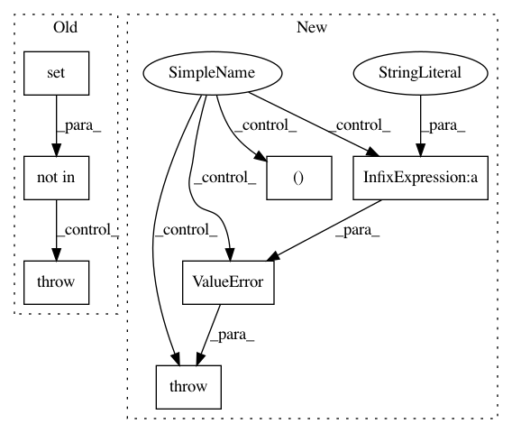

023331ec2a7b0086abfc81eca16c84a1692ee653,keras/layers/convolutional.py,Cropping3D,__init__,#Cropping3D#Any#Any#,1860
Before Change
raise ValueError("`cropping[1]` must be a tuple length of 2.")
if len(self.cropping[2]) != 2:
raise ValueError("`cropping[2]` must be a tuple length of 2.")
if data_format not in {"channels_last", "channels_first"}:
raise ValueError("data_format must be in {"channels_last", "channels_first"}.")
self.data_format = data_format
self.input_spec = [InputSpec(ndim=5)]
def build(self, input_shape):
After Change
"2nd entry of cropping")
dim3_cropping = conv_utils.normalize_tuple(cropping[2], 2,
"3rd entry of cropping")
self.cropping = (dim1_cropping, dim2_cropping, dim3_cropping)
else:
raise ValueError("`cropping` should be either an int, "
"a tuple of 3 ints "
"(symmetric_dim1_crop, symmetric_dim2_crop, symmetric_dim3_crop), "
"or a tuple of 3 tuples of 2 ints "
"((left_dim1_crop, right_dim1_crop),"
" (left_dim2_crop, right_dim2_crop),"
" (left_dim3_crop, right_dim2_crop)). "
"Found: " + str(cropping))
self.input_spec = [InputSpec(ndim=5)]
def get_output_shape_for(self, input_shape):
if self.data_format == "channels_first":
In pattern: SUPERPATTERN
Frequency: 3
Non-data size: 7
Instances
Project Name: keras-team/keras
Commit Name: 023331ec2a7b0086abfc81eca16c84a1692ee653
Time: 2017-02-09
Author: francois.chollet@gmail.com
File Name: keras/layers/convolutional.py
Class Name: Cropping3D
Method Name: __init__
Project Name: keras-team/keras
Commit Name: 22d3c8810cc2c80bc5778e8101ec193199ae7069
Time: 2016-12-13
Author: francois.chollet@gmail.com
File Name: keras/engine/topology.py
Class Name: Merge
Method Name: _arguments_validation
Project Name: keras-team/keras
Commit Name: 023331ec2a7b0086abfc81eca16c84a1692ee653
Time: 2017-02-09
Author: francois.chollet@gmail.com
File Name: keras/layers/convolutional.py
Class Name: Cropping2D
Method Name: __init__